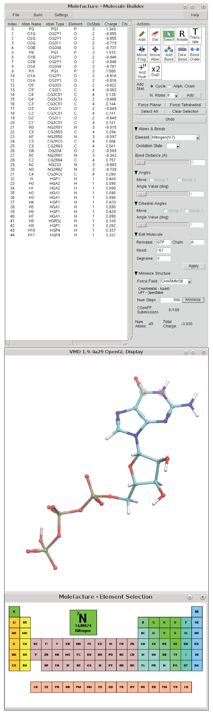
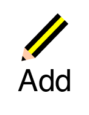
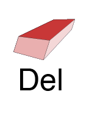
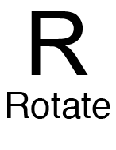
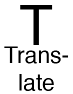
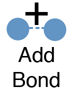
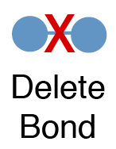
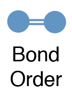
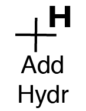
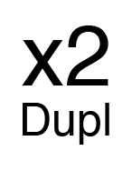

The molefacture plugin provides VMD users with an interface to create and edit molecules. This includes the ability to add, delete, or manipulate their structure at an atomic level, and to build new components from a library of common fragments.
Opening Molefacture
Molefacture is located in the VMD Extensions -> Modeling -> Molefacture.
The Molefacture Graphical User Interface
Most operations in Molefacture are controlled in the "Action" section buttons (icon buttons on the top right section). These actions can be toggled in the VMD OpenGL by using the shortcuts.
|

|
Add new atom. This button add a new atom of the element selected in the "Element:".
Shortcut: Control-a
|
|

|
Delete atom.
Shortcut: Shift-a
|
|
|
Select one or more atoms. Press and hold the "Shift" key to select multiple atoms in the OpenGL window.
Select the residues directly in the table of atoms has the same effect.
Shortcut: Control-s
|
|

|
Rotate the view/scene. No coordinate is affected when the view changes.
Shortcut: r
|
|

|
Translate the view/scene. No coordinate is affected when the view changes.
Shortcut: t
|
|
|
Move Fragment. Press and hold "Shift" to for Rotation. This action changes the coordinates of the molecule.
Shortcut: Control-m
|
|
|
Move Atom. This action changes the coordinates of the atom.
Shortcut: 5
|
|

|
Bond two atoms together. This is a single time operation. First select two
atoms and then press this button.
To use this action in multiple pair of atoms,
press "Control-b" (activate bond mode). Until this mode is turned off, the bond is
created if "Shift" is pressed when the second atom is selected.
Shortcut: Control-b
|
|

|
Delete bond between two atoms. This is a single time operation. First select two
atoms and then press this button.
To use this action in multiple pair of atoms,
press "Shift-b" (activate delete bond mode). Until this mode is turned off, a bond is
deleted if Shift is pressed when the second atom is selected.
Shortcut: Shift-b
|
|

|
Change bond order (single, double, and triple). First select two bonded atoms, then
select the target bond order.
Shortcut:
- Raise Bond Order (Control + i)
- Lower Bond Order (Shift + i)
|
|

|
Add Hydrogens to:
- the whole structure, if no atom is selected;
- or to the selected atoms.
The number of Hydrogen atoms to be added to each atom is based on the open valency
of the atom, which can be modified by changing the oxidation state.
Shortcut: Control-h
|
|

|
Duplicate the selected atoms.
Shortcut: Control-d
|
Additional Shortcuts
Similar to the shortcuts listed above, the following key combinations are effective only if the VMD OpenGL
window is active and selected:
- Clear atom selection: Control-c
- Undo: Control-z
- Change the selected atom's element to:
- Oxygen: Shift-o
- Carbon: Shift-c
- Nitrogen: Shift-n
- Hydrogen: Shift-h
- Sulfur: Shift-s
- Phosphorus: Shift-p
Add Skeleton
This function creates skeleton molecules composed by carbon atoms in form of ring or chain, with the number of atoms defined in the drop-down menu (N. Atoms). If an atom(s) is selected, the new skeleton will be bond to the selected atom.
Force Planar - Force an atom with 3 or fewer bonds into a planar geometry.*
Force Tetrahedral - Force an atom with 4 or fewer bonds into a tetrahedral geometry*
*Only the Hydrogen atoms move to form the desirable geometry.
Select All - Select all the atoms in the table.
Clear Selection - Clean the atom selection.
Atoms & Bonds
The element of the atoms can be selected from the drop-down menu "Element." In case of the default list of elements doesn't include the target element, one can choose the option "Other...", and select the elements from an interactive periodic table (represented above).
Oxidation State - Increase or decrease the oxidation state of the selected atom(s) to allow more or less number of bonds. This oxidation state is especially important during the addition of the Hydrogen atoms to the whole structure. The oxidation state can also be set in the table of atoms column "OxiState".
Bond Distance - Increase or decrease the bond distance of two selected bonded atoms. Distance in Ångestroms.
Angles and Dihedrals
Increase or decrease the angles formed by the selected atoms. The molecule is mapped into two groups that will move to allow the angle to change. A General Rule with these two groups, "Group 2" is the group containing less number of atoms in most cases.
Edit Molecule
Edit molecule's attributes Residue Name, Chain, ResID, and Segment Name all at once. If no atom is selected, all the atoms will be affected by these changes. Otherwise, only the selected atoms are affected when the button "Apply" is pressed.
Minimize
Use Open Babel or NAMD to clean the structure conformation (please see the "Topology & Parameters" section below).
Menus
File Menu
- New molecule. Start editing a new molecule:
- from the beginning (New Molecule -> From scratch);
- based on an atom selection of a top molecule previously loaded into VMD (New Molecule -> From selection). In this case, one needs to enter a valid atom selection (please see atom selection's reference) representing the molecule or a set of molecules (e.g. "resname GTP"). ;
- Apply Changes to parent. In the case of starting editing a molecule based on an atom selection, this action will replace the original atom selection by the molecules being edited in Molefacture.
- QwikMD: if Molefacture was invoked by QwikMD during the process of generating topology for an unparameterized molecule, this action will send the molecule and the topology back to QwikMD.
- Write MOL2 file. Export the molecule to a MOL2 file format. This MOL2 file format is a modified version of what VMD usually produces. In this case, the element is set as atom type and the comment "#generated by VMD" is placed at the end of the file.
- Write XYZ file. Export the molecule to a XYZ file format
- Write top/str file. Export the topology(top) or stream(str) file.
- Write psf and pdb file. Export the psf and pdb file pair, along with all the topology files used during the preparation of the files.
These additional topologies are selected on the menu Settings -> Default Topologies
Build Menu
The Build Menu provides a number of options for construction and atom typing of the new molecules.
Topology & Parameters
It is in this menu that the topology of the molecule being edited is assigned. Molefacture prepares structures to be simulated using the CHARMM36 Force Filed. Although it is not mandatory to assign any atom type to model a molecule, if one wants to clean/minimize the structure conformation using a more rigorous method, Molefacture will invoke NAMD minimizer using CHARMM36 as force field. Otherwise, Molefacture invokes Open Babel (obminimize) using the Universal Force Field (UFF).
Export and Import topologies to CGenFF. Using this menu, the user can export MOL2 files to be submitted to the server or local executable of CGenFF. The submission can be done automatically if the username and password of the CGenFF Server is defined (please see Settings), or if the path to the local executable is defined. *The user authentication in the direct communication of VMD and the CGenFF Server is still being developed by the developers team. We will update this information once this process is finalized.
Guess Bond Order (using IDATM VMD plugin). IDATM provides a method for automatically typing atoms in a molecule based on geometric information. When run, it can apply atom types and, in combination with molefacture, properly add Hydrogen atoms when necessary. IDATM is based on the algorithm presented by Meng and Lewis (JCC 12(7):891-898), with a few minor modifications. The guessing of the bond order is performed automatically when the molecule is loaded, in the case the "New Molecule -> From selection".
Fragments and fragment addition
Most molecular editing in molefacture can be done at the level of fragments: small, predefined moieties which can be combined to create most molecules of interest. Fine-tuning can be done at the level of adding individual atoms or bonds when the fragment libraries are not sufficient. The fragments can be appended to an existing molecule using the Replace atom with fragment menu, or add an independent fragment, using the
Add independent fragment.
Molefacture comes with a variety of fragments predefined and in the next Molefacture versions, the user will be able to extend the fragment library with user-defined molecules.
Duplicate Selected Atoms. Performs the same function as the "Duplicate" button in the "Action" section.
Protein Builder
Interactive peptide chains modeling. When adding the individual residues, the user can assign the Φ (phi) and Ψ (psi) backbone angles. The modeling process can be done by adding one residue at the time, or based on a sequence of the single-letter amino acid code.
Settings Menu
This menu controls essentially two aspects of Molefacture:
- CGenFF Settings:
Here the user can define the username and password of the CGenFF Server, or the Path to the local copy of the CGenFF program executable. These variables can be stored in the .vmdrc (Linux and Mac) or vmd.rc (Windows) to be used every time VMD is launched.
- env(CGENFF) - This variable can have 2 possible values (local and server) and indicates to Molefacture, which CGenFF to execute;
- env(CGENFFUSERNAME) - CGenFF Server account username;
- env(CGENFFPASSWORD) - CGenFF Server account password;
- env(CGENFFPATH) - The full path to the CGenFF program executable.
- Default Topologies:
Select the CHARMM36 topologies to use during the preparation of the psf and pdb files. The topologies previously added to QwikMD will also be included in this list. The inclusion/exclusion of topologies should be done before starting the editing/creation process of molecules.
Contributors
- João Ribeiro, Theoretical and Computational Biophysics Group,
University of Illinois at Urbana-Champaign
- Peter Freddolino, Theoretical and Computational Biophysics Group,
University of Illinois at Urbana-Champaign
- Johan Strumpfer, Theoretical and Computational Biophysics Group, University of Illinois at Urbana-Champaign
- Paratool-related: Jan Saam, Theoretical and Computational Biophysics Group,
University of Illinois at Urbana-Champaign
- FEP section:
Chris Chipot, Centre National de la Recherche Scientifique, Nancy
University and Theoretical and Computational Biophysics Group,
University of Illinois at Urbana-Champaign